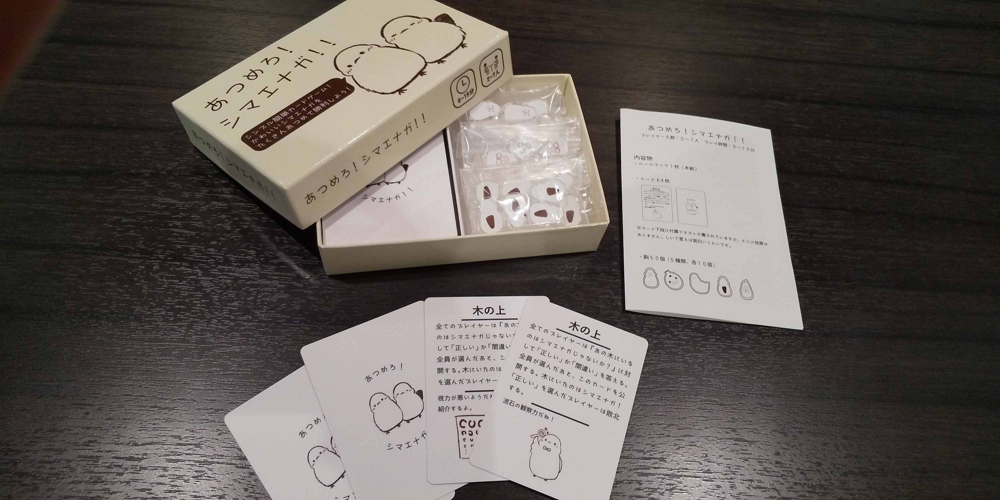
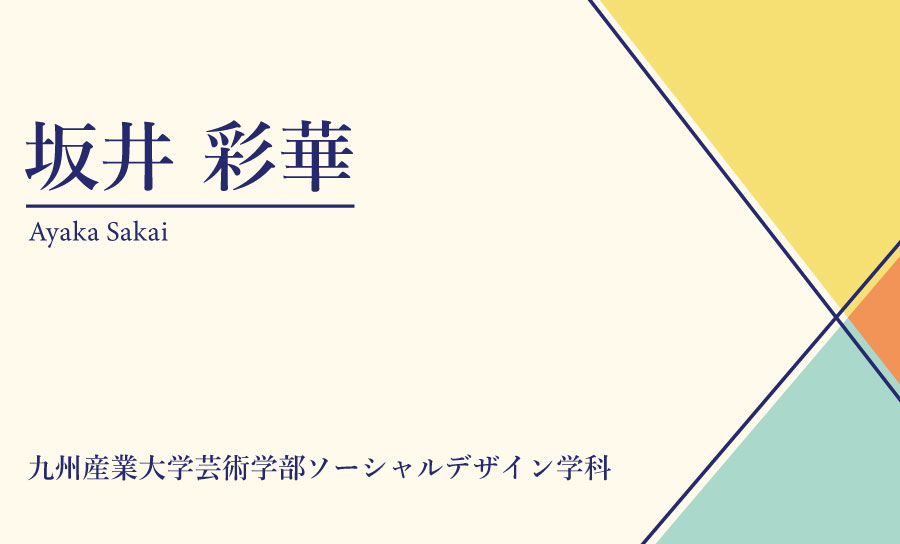
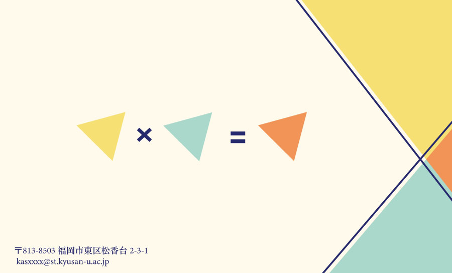

あつめろ！シマエナガ！！
シマエナガのイラストを使用したアナログカードゲームを制作。
-
コロナの影響もあり最近では直接会ってカードゲームなどをするのではなく、
オンラインでゲームをする機会が多くなっているため、相手と直接関わって楽しめる
ゲームを作りたいと思った。ルール、カードテキストなど、全て自分で考え、印刷会社さん
に印刷依頼までを行った。
名刺
（表）
（裏）
自分の名刺を想定して制作。
-
三角と掛け合わせるをテーマとして作成していった。
色味は目に優しく、あまりビビットな色は使わないように心がけた。
文字の色は黒を使うのではなく黒に近い藍色を使うことで色を調和させた。
裏面の三角を掛けているのは、あるものとあるものを掛け合わせて新しいものを生み出すという
意味を込めた。